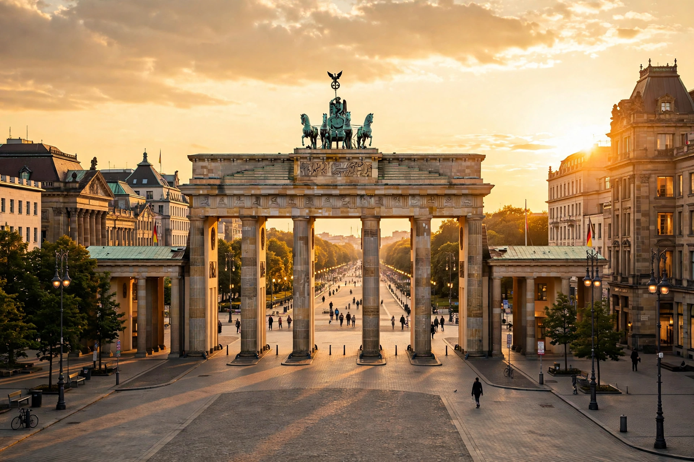

The Brandenburg Gate (German: Brandenburger Tor) is an 18th-century neoclassical monument in Berlin, built on the orders of King Frederick William II of Prussia. One of the best-known landmarks of Germany, it stands at the western end of Unter den Linden, at Pariser Platz. It was built as the grand entrance to the boulevard leading to the City Palace, and it became a symbol successively of Prussian triumph, Napoleon's occupation, the division of Berlin during the Cold War, and German reunification.
| Brandenburg Gate | |
|---|---|
 | |
| Location | Pariser Platz, Berlin, Germany |
| Architect | Carl Gotthard Langhans |
| Built | 1788–1791 |
| Height | 26 m (85 ft) |
| Style | Neoclassical |
Designed by Carl Gotthard Langhans and modelled on the Propylaea of the Acropolis of Athens, the gate is 65.5 metres wide and 26 metres high, supported by twelve Doric columns forming five passageways. It is crowned by the Quadriga, a statue by Johann Gottfried Schadow of the goddess of victory driving a chariot drawn by four horses.
Napoleon took the Quadriga to Paris as a trophy in 1806; it was returned after his defeat in 1814 and the goddess was given an Iron Cross and Prussian eagle. The gate survived World War II with damage and stood in the Soviet sector after 1945. When the Berlin Wall was built in 1961, the gate lay in the death strip, inaccessible from either side. US President Ronald Reagan delivered his famous "Tear down this wall!" speech at the gate in 1987. After the Wall fell in 1989, the gate reopened on 22 December 1989 and became the focal point of reunification celebrations. It was extensively restored in 2000–2002.
The gate appears on German euro coins (10, 20, and 50 cent) and is a frequent setting for public celebrations, including New Year's Eve and football victory parties.
From Wikipedia, the free encyclopedia (recreated from memory).